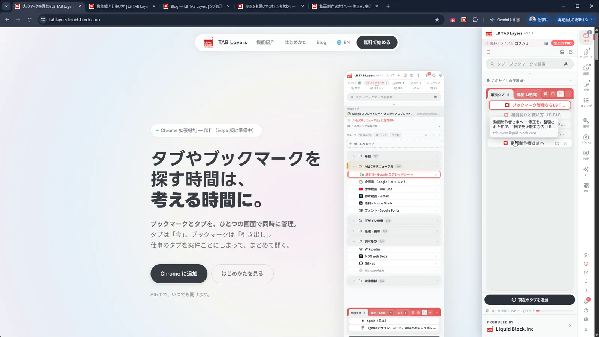

Chrome のサイドパネルはページの横に並ぶので、画面の狭い PC ではページが狭くなります。LB TAB Layers では、設定 › 使い方 › 表示のしかた で「オーバーレイ」を選ぶと、パネルをページの上に重ねて出せます。ふだんはページの端に小さな「＋」があるだけで、使うときだけ開きます。パネルを新しいタブや別窓で開くこともできます。
サイドパネルは便利ですが、ページの横に並ぶので、そのぶんページが狭くなります。ノート PC や小さな画面では、「パネルが邪魔で、ページが読みにくい」と感じることがあると思います。
LB TAB Layers を入れたその日に、「重い・邪魔だった」という理由で外した方がいました。サイドパネルが画面の幅を取ることが、合わない方もいます。この記事では、そんなときの逃げ道をまとめました。
まず、Chrome の標準でできること
- 幅を変える — サイドパネルとページの境目をドラッグすると、パネルの幅を狭くできます
- 左右を変える — Chrome の設定 › 外観 の「サイドパネル」で、左に出すか右に出すかを選べます
- 閉じる — 使わないときは閉じておき、使うときだけ開きます。LB TAB Layers なら Alt+T（Mac は Option+T）で開け閉めできます
それでも狭いときは、パネルをページの横に並べるのをやめる方法があります。
ページの上に重ねて出す「オーバーレイ」
LB TAB Layers では、パネルをページの上に重ねて出す「オーバーレイ」に切り替えられます。ふだんはページの端に小さな「＋」があるだけで、ページはいつもの幅のままです。使うときだけ「＋」にマウスを乗せると、パネルが重なって出て、ページへ戻ると閉じます。
設定 › 使い方 › 表示のしかた で「オーバーレイ」を選ぶ
設定は、パネルの右の列のいちばん下の歯車から開きます。位置（左・右）、幅、ボタンの位置、起動時の表示（チラ見せなど）も、ここで選べます。
サイドパネルを閉じる
Alt+T か、パネルの右上の × で閉じます。開いていたページで「＋」が出ないときは、ページを読み込み直してください。
ページの端の「＋」にマウスを乗せる
パネルがページの上に重なって出ます。ページのほうへマウスを戻すと、閉じます。
オーバーレイで使えるもの
オーバーレイで使えるのは、基本の機能です。
- タブとブックマークの管理（保存・▶ で開く・■ で閉じる・検索）
- メモ
- ステップタスク
動画やページの修正指示は、サイドパネルで使います。使うときは Alt+T でサイドパネルを開いてください。オーバーレイは PRO の機能です（入れてから 30 日間のお試しでは使えます）。
パネルを、新しいタブや別窓で開く
パネルは、サイドパネルの外でも開けます。右の列の下の「表示方法を選択」から、新しいタブや独立ウィンドウ（別窓）で開けます。
- ノート PC なら、1 つのタブで — 整理するときだけタブで広く開き、ふだんはページを広く使う
- モニターが 2 台なら、別窓で — 片方の画面にパネルの窓を置き、もう片方でページを広く見る
どれを選べばいいか
- ページを見ながら、ときどきタブを切り替える → オーバーレイ
- しっかり整理したい・修正指示を書く → サイドパネル（必要なときだけ Alt+T）
- 画面が 2 つある → 別窓
- ノート PC で、整理するときだけ広く → 新しいタブ
表示のしかたは、いつでも設定から戻せます。合わないと感じたら、外す前に一度、ほかの表示を試してみてください。
よくある質問
Q. サイドパネルを開くと、ページが狭くなって邪魔です。
サイドパネルの幅は、境目をドラッグして狭くできます。それでも狭いときは、LB TAB Layers の設定 › 使い方 › 表示のしかた で「オーバーレイ」を選ぶと、パネルをページの上に重ねて出せます。ふだんはページの端に「＋」があるだけです。
Q. オーバーレイでは、すべての機能が使えますか？
タブとブックマークの管理・メモ・ステップタスクなど、基本の機能が使えます。動画やページの修正指示は、サイドパネルで使います。
Q. オーバーレイは無料ですか？
オーバーレイは PRO の機能です。入れてから 30 日間のお試しでは使えます。新しいタブや別窓で開く方法は、無料版でも使えます。
Q. 元のサイドパネルに戻すには？
設定 › 使い方 › 表示のしかた で「固定」を選ぶと戻ります。
▶ 実際の操作を動画で見る
サイドバーで、ブックマークとタブをいっしょに管理する様子です。
ページを広く、パネルは必要なときだけ。
サイドパネル・オーバーレイ・新しいタブ・別窓から、画面に合う形を選べます。アカウント登録なし · 保存先は Chrome のブックマーク
Chrome に無料で追加 →